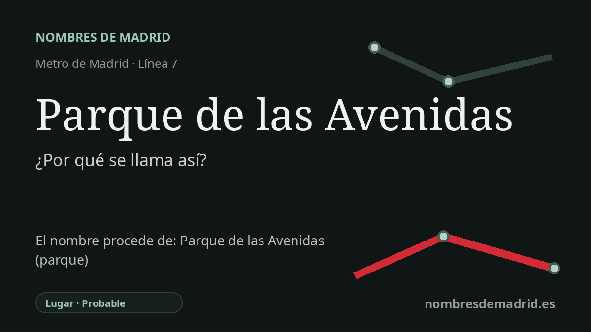

Publicado el · Investigación de Nombres de Madrid · Cómo verificamos cada origen · 9 fuentes consultadas
Respuesta rápida
La estación toma su nombre del Parque de las Avenidas, la zona residencial y ajardinada de mediados del siglo XX en La Guindalera. El nombre alude a la red planificada de avenidas y calles del conjunto, muchas con nombres de ciudades como Bruselas, Bonn y Brasilia.
La historia del nombre
La estación Parque de las Avenidas toma su nombre del lugar que la rodea: el Parque de las Avenidas de La Guindalera, en el distrito madrileño de Salamanca. El Consorcio Regional de Transportes sitúa sus accesos en la avenida de Bruselas, mientras que el Ayuntamiento de Madrid identifica el parque municipal cercano en la avenida de Brasilia. En el uso cotidiano madrileño, el nombre no designa solo un jardín aislado, sino también el conjunto residencial y urbano de esas avenidas.
La historia que explica el topónimo es una historia urbana moderna. El Colegio Oficial de Arquitectos de Madrid describe el Parque de las Avenidas como el núcleo urbano más importante surgido en La Guindalera tras la legislación de viviendas de renta limitada de 1954, promovido por la Compañía Inmobiliaria Organizadora del Hogar, S.A. (CIOHSA). La urbanización se fecha en 1956, con edificaciones desarrolladas sobre todo desde finales de los años cincuenta y durante los sesenta.
Antes de esa operación, esta parte de La Guindalera no era un parque formal en sentido histórico. Fuentes madrileñas de referencia describen una franja de unas cuarenta hectáreas entre el arroyo Abroñigal y el Canalillo, ocupada por huertas, cultivos de flores, tejares y caminos antiguos. El desnivel hacia el antiguo cauce del Abroñigal dificultaba la edificación y favoreció que parte del conjunto se destinara a zona verde, reforzando después el sentido de la palabra "parque" en el nombre del área.
La parte de "las Avenidas" también es literal. El conjunto se articula mediante vías amplias como la avenida de Bruselas, la avenida de Bonn y la avenida de Brasilia, junto con otras calles y plazas próximas con nombres de ciudades, muchas de ellas empezadas por la letra B. El topónimo tiene por eso un sabor claramente planificado y de mediados del siglo XX: nombra un barrio por sus avenidas tanto como por sus zonas verdes.
La referencia de la redacción actual a Cecilio Rodríguez y a un parque construido entre 1928 y 1933 no queda respaldada por las fuentes madrileñas más sólidas consultadas. Cecilio Rodríguez fue un jardinero y paisajista fundamental en Madrid, especialmente vinculado al Retiro y a otros jardines municipales, pero las fichas arquitectónicas autorizadas del Parque de las Avenidas atribuyen la urbanización de 1956 y las edificaciones posteriores a Francisco Echenique Gómez y Luis Calvo Huedo. Por tanto, el nombre de la estación puede considerarse probablemente verificado como topónimo local, pero debe eliminarse la cronología y atribución a Cecilio Rodríguez.